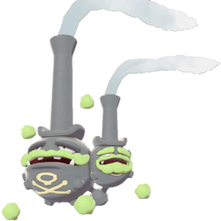

#110
Weezing
Poison
Long ago, during a time when droves of factories fouled the air with pollution, Weezing changed into this form for some reason.
Height: 3.0m
Weight: 16.0kg
Poison
Long ago, during a time when droves of factories fouled the air with pollution, Weezing changed into this form for some reason.
Height: 3.0m
Weight: 16.0kg
Poison Gas
Stench
Misty Surge
East Lake Axewell
Lake of Outrage
Slumbering Weald
Weezing absorbs polluted air from factories. It has a gray body with the skull, crossbones, and ring in the color yellow. Both heads have a hat-like tube located on top of them that constantly releases purified air. Five green puffs of poison gas clouds can be seen floating around it. The larger head has a cloud-like mustache, while the smaller head has clouds on its face in the shape of eyebrows and a beard. Galarian Weezing consumes particles from the polluted air.
Outside of battle, Weezing expels clean air instead of poison. The toxins within Weezing's body are accumulated into poison gas clouds that leaks and drifts around it. The gas is Weezing's best weapon in battle, being potent enough to stun and immobilize an opponent with just a whiff. Galarian Weezing preys on Trubbish for the fumes it produces.